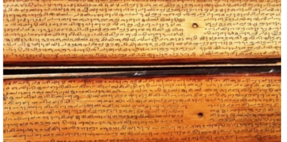
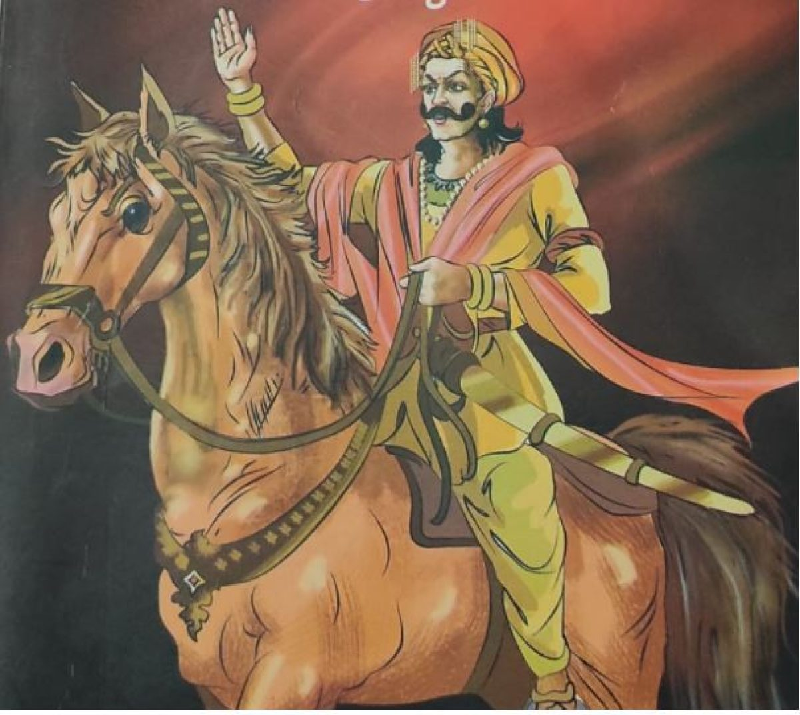
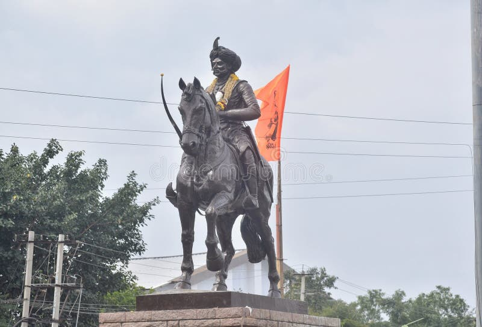
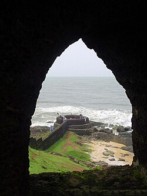

The Imperial Charter of Tuluva Sovereignty: How the Keladi Era Shattered the Myth of the Spoken Dialect

Figure 1: Authentic palm-leaf manuscripts documenting historical regional literature, demonstrating the highly structured classical nature of the Tulu script (Tigalari Lipi).For generations, mainstream historiography has operated under a convenient, reductive myth: that the Tulu language was historically restricted to an unwritten, localized folk tongue, passing down only oral traditions in the fields and estuaries of the coast.
This narrative is not merely incomplete—it is historically fraudulent. The absolute peace, economic wealth, and geopolitical stability of the Keladi (Ikkeri) Kingdom fostered a dense concentration of high-courtly, written masterpieces. The economic, administrative, and literary frameworks of this era provide undeniable proof that the Keladis were not enemies or cultural erasers of Tulu Nadu; they were its institutional amplifiers. Through their actions, the Keladis belonged to the Tuluvas, cementing a shared legacy of civilizational sovereignty.
The Crown and the Script: Venkatappa the Catalyst & Shivappa the Grand Preserver
The golden age of written Tulu literature did not occur by accident; it was a sustained, state-sponsored imperial project. While the spark of this literary renaissance was lit during the reign of Hiriya Venkatappa Nayaka—under whose rule the monumental Sri Bhagavato was composed in 1626 CE—it was his legendary successor, Keladi Shivappa Nayaka, who transformed the royal court into a massive preservation sanctuary for the Tulu language and its unique script.

Figure 2: Hiriya Venkatappa Nayaka, the sovereign under whose foundational reign the classical Tulu renaissance was ignited with courtly literary backing.If critics demand unarguable material evidence of this linguistic royalty, they need only look to the surviving archives of the kingdom. To this day, visitors to regional archives will find the undeniable fruits of this royal patronage: over 75% of the ancient palm-leaf manuscripts preserved from his royal treasury and archives are written in the Tulu script (Tigalari Lipi). Amidst an era of heavy regional warfare, Shivappa Nayaka systematically collected, cataloged, and protected these coastal manuscripts—spanning classical literature, Vedic sciences, and local lore—saving a civilization's intellectual wealth from permanent destruction.

Figure 3: The iconic statue of Keladi Shivappa Nayaka (Reign: 1645–1660 CE), the master strategist, economic reformer, and military guardian of the West Coast.The Geopolitical Shield of Tuluva Culture
Shivappa Nayaka’s dedication to coastal heritage was fueled by a fierce geopolitical strategy. He is celebrated in history for completely crushing Portuguese military and economic power along the Kanara coast, aggressively reclaiming strategic ports like Mangalore, Gangolli, and Barkur. By driving out foreign interference, he shielded local Tuluva cultural institutions, temples, and mathas from colonial erasure.
The Economic Engine: Sistu and the Wealth of the Guthu Manes
An imperial literary image cannot survive on poetic talent alone; it requires immense, systemic wealth. During the mid-17th century, Keladi Shivappa Nayaka provided the exact economic framework that transformed Tulunadu into a well-funded cultural superpower through his legendary land assessment policy: Shivappa Nayakana Sistu.
Because the coastal ports of Barkur and Mangalore were the global epicenters of the highly lucrative pepper and rice trade, Shivappa Nayaka systematically tailored the Sistu system to match the unique coastal ecology of Tulunadu. Rather than imposing blind imperial taxes, the Sistu was calculated using local agricultural parameters.
1. Scripting the Economy in Tulu (Administrative Validity)
To execute this monumental land reform on the ground, the Keladi administration had to speak the language of the soil. Government land records, tax receipts, and imperial revenue charts distributed to coastal landlords were recorded using the Tulu-Tigalari script. By integrating Sistu into the local written medium, the Keladi state gave Tulu official, administrative, and legal validity.
2. Empowering the Guthu and Beedu Families (The Custodians of Capital)
Because the Sistu system protected agrarian yields from erratic over-taxation, it allowed the traditional Tuluva elite—the Guthu and Beedu feudal families—to accumulate unprecedented generational wealth. This surplus revenue directly fueled the golden age of coastal culture. The very families who managed the Sistu lands used their wealth directly to fund the arts:
- Commission Masterpiece Manuscripts: They hired elite scribes to meticulously ink foundational epics onto high-grade palm leaves using the sacred Tulu-Tigalari script.
- Establish Script Sanctuaries: The massive, sprawling wooden architecture of the Guthu Manes became regional repositories and private archives, protecting sacred literature and Vedic sciences from the humid coastal climate and wartime plunder.
- Endow Ritual and Folk Arts: The financial security provided by the Keladi revenue reforms allowed these feudal manors to patronize and scale grand regional traditions, cementing a distinct cultural identity that stood proudly and independently of outside influences.
The Natural Border: The Chandragiri River
In ancient times, the Chandragiri River (also known as the Payaswini) served as the ultimate cultural and political boundary line. To the north of the river lay Tulunadu, the vibrant core of the Tulu-speaking world. To the south lay Kolathunadu, the Malayalam-speaking domains of the Chirakkal and Malabar kingdoms.
The Keladi kings pushed their empire all the way down to this exact river, establishing it as the ironclad southern frontier of their kingdom. Shivappa Nayaka marched even further south, planting a historic victory pillar at Nileshwaram to assert that the entire Kasaragod region was permanently under Tuluva-Keladi protection.
The Chain of Iron Bastions: The Kasaragod Forts
To ensure neither the Malabar kings nor the advancing Portuguese could breach this sacred Tuluva border, Shivappa Nayaka built and heavily renovated a legendary chain of coastal defense fortifications across modern-day Kasaragod. This shield locked down the southern frontier completely:
- Chandragiri Fort: Built 150 feet high, right on the southern bank of the Chandragiri estuary, this fortress was designed specifically to guard the river mouth and monitor maritime entry.
- Bekal Fort: Erected as a massive, world-famous keyhole-shaped stronghold (standing today as the largest fort in Kerala), Bekal was completed by Shivappa Nayaka in 1650 AD to serve as the ultimate military headquarters for defending southern Tulu territory.
- Hosdurg (Kanhangad) Fort: Serving as another vital link in the same defensive network, this fortress secured internal land routes from hostile incursions.

Figure 5: The sea-facing defensive observation portals at Bekal Fort, completed under Shivappa Nayaka as the ultimate headquarters to defend the southern Tulu border.Why This Matters Today: Sapthabhasha Sangamabhoomi
The geopolitical boundaries drawn by the Keladi Nayakas in the 17th century are the exact reason why modern Kasaragod is celebrated as Sapthabhasha Sangamabhoomi—the land of seven languages. Because the Keladi kings held the northern half of Kasaragod tightly under their protection, the Tulu language, Tulu-Tigalari script traditions, Yakshagana, and Tuluva cultural structures remained deeply rooted in the soil, blending harmoniously over centuries with neighboring Malayalam traditions rather than being overwritten by them.
The Tulu Literary Monopolies of the Keladi Era
Through this economic and geopolitical empowerment, Tulu ceased to be just the language of daily trade; it became the language of the high courts, producing a dense concentration of highly demanding, written masterpieces:
- Sri Bhagavato (1626 CE): Composed by the legendary scholar Vishnu Tunga, this monumental text stands as the premier poetic epic of the region. Exactly four centuries ago, this work weaponized complex Shatpadi meters to translate the dense, multi-layered philosophical discourses of the Bhagavata Purana. It stands as the definitive proof that Tulu possessed an elite vocabulary capable of carrying the absolute highest forms of metaphysical human thought.
- Kaveri (17th Century): This extensive geographic, historical, and mythological poem meticulously details the sacred origins of the Kaveri River. Composed entirely in the Tulu language using the formal Tulu-Tigalari script, it demonstrates that the intellectuals of the era were using our native script to map the sacred geography of Southern India, claiming a high-cultural space entirely independent of outside influences.
Linguistic Erasure and the Modern Narrative Battle
The systematic effort to reduce classical languages to minor, regional oral variants is not a new tactic—it is a continuous digital and cultural phenomenon. In contemporary spaces, we often witness grassroots information battles where historical connections are stripped out by misinformed commentary or malicious intent. Authentic lineages are routinely targeted to muddy the waters of cultural custody and ancestral truths.
 Figure 6: A documented case file (Ref: 1000135854.png) showcasing modern community dialogues regarding the systematic defense of regional accounts, record integrity, and narrative transparency against malicious digital edits.
Figure 6: A documented case file (Ref: 1000135854.png) showcasing modern community dialogues regarding the systematic defense of regional accounts, record integrity, and narrative transparency against malicious digital edits.
As illustrated above, modern platforms serve as critical battlegrounds where watchful preservation forces actively confront false claims and wrong captions. Protecting textual and scriptural evidence is the only defense against structural heritage theft—ensuring that external revisionist groups cannot fabricate narratives to break down traditional legacies.
⚡ INTELLIGENCE STREAMSubscribeWhatsApp Dispatch
Get real-time historical research, script developments, and unedited archives.
⚖️ ADVOCACY HUBJoin PetitionTelegram Petition
Join our active mobilization forces for official recognition and script integration.
Conclusion: A Legacy Restored
The discovery, timeline dating, and physical archival documentation of these classical texts prove a historic truth that has been obscured for centuries: ancient Tulu was never a minor, localized tongue.
It was an elite language of high culture—a language that sat in royal courts, moved the pens of kings, and matched the structural and philosophical complexity of Sanskrit line for line. The alliance between the Keladi rulers and the Tuluva aristocracy proved that our heritage was not built on subjugation, but on structural, economic, and literary partnership. For the modern Tuluva community, these palm-leaf manuscripts are not merely dusty relics of a bygone era. They are the undeniable, historic charter of Tulu's enduring imperial identity and a sovereign literary legacy restored.